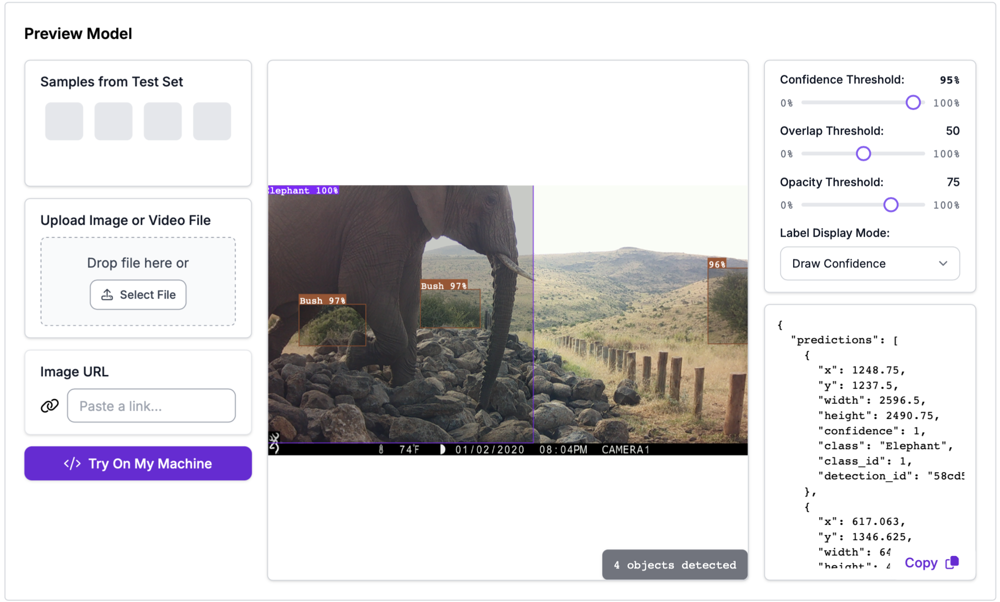

Field survey at Lewa — the conservancy spans over 62,000 acres of savannah and highland terrain.
A camera trap review process that consumed up to a week of staff time — reduced to minutes. Built during a research placement at Lewa Wildlife Conservancy, northern Kenya.
The Problem
The wildlife corridor linking Lewa Wildlife Conservancy to Mount Kenya is one of northern Kenya's most ecologically significant landscape features — enabling seasonal migration, genetic diversity, and habitat access for elephants, Grevy's zebra, giraffe, and buffalo. In 2022 alone, over 50,000 wildlife crossing events were recorded across the corridor.
Monitoring this movement relies on camera traps positioned along the 14 km corridor. But the volume of imagery created a persistent problem: reviewing a single week's footage could take up to a week of staff time. Consistent, timely analysis was nearly impossible to sustain.
The goal: replace manual review with an automated pipeline that processes large batches of camera trap images, classifies species, determines direction of movement, and exports structured data — in a fraction of the time.
Field survey at Lewa — the conservancy spans over 62,000 acres of savannah and highland terrain.
How it was built
Over 5,000 annotations were compiled from raw camera trap footage across three corridor sites (Underpass, Mariana mid-section, Mt Kenya Exit) and supplementary images. Each image was manually annotated in Roboflow using bounding boxes across 13 species classes. The hardest task was differentiating Grevy's zebra from plains zebra — two species with near-identical stripe patterns.
A custom object-detection model — lewa-elephants/6 — was trained on the annotated dataset within Roboflow. Version 6 is the final production model, trained July 16 2025, using Roboflow 3.0 Object Detection Extra Large architecture. The platform handled preprocessing, augmentation, and API deployment.
A local Python script connected to the Roboflow API to process images in batches. Images were loaded and resized to 1280px max width using Pillow, maintaining aspect ratio. Each image was passed to the model, returning predictions with species labels, confidence scores, and bounding box coordinates. Images with no detections were skipped automatically.
For each detected animal, the horizontal centre of its bounding box (x-position) was tracked across sequential frames. Left-to-right was classified as INTO Lewa, right-to-left as OUT OF Lewa. Without this directional anchoring, the same animal across consecutive frames would be counted multiple times — significantly inflating totals.
Final species counts (IN and OUT) were exported to formatted_results.csv. This enables longitudinal species-level tracking, seasonal movement pattern identification, and integration with broader ecological datasets — giving Lewa's team a scalable foundation for data-driven habitat management.
Live Inference
A real camera trap image from the corridor — the model returns bounding boxes and confidence scores as structured JSON. The elephant here was detected at 100% confidence.

Camera CAMERA1 — 4 objects detected including elephant and bush classifications. Timestamp 01/02/2020 08:04PM.
Raw JSON from the Roboflow API — each prediction includes class, confidence, and bounding box coordinates used for directional movement tracking.
Dataset
293 images from one week of camera trap footage were processed in the final assessment. Across the full training process, 5,000+ annotations were made covering 13 classes. The distribution below shows why plain zebra and elephant dominate — and why Grevy's zebra differentiation remains the hardest classification challenge.
Grevy's Zebra (29 annotations) vs Plain Zebra (212) — visually similar stripe patterns make this the most challenging classification pair in the dataset. Highlighted in red.
Performance — Model v6
A comparative test pitted the model against a manual count of elephant crossings over one week. The model was within +3 animals on inbound and -10 animals on outbound crossings — a strong margin for a field model given the volume and situational challenges involved.
Operational Impact
A full week's footage — previously requiring up to a week of manual staff review — now processed in minutes in a single session.
Structured CSV output enables species-level IN/OUT tracking over time, seasonal movement pattern identification, and integration with wider ecological datasets.
The pipeline accommodates new camera placements or additional species classes as monitoring needs evolve — no rebuild required.
Lewa/Borana host 317 of Kenya's ~3,000 remaining Grevy's zebra. Reliable movement data directly supports habitat management for an endangered species.
Limitations & Next Steps
Juvenile elephants are frequently obscured behind adults, making them difficult to detect within the camera's field of view.
Cameras positioned too close to crossing points lack the breadth of view needed to capture full herd compositions.
Clouds and dense bush occasionally trigger detections. A dedicated bounding box category was added but flagged entries still require manual CSV cleanup.
Grevy's and plains zebra remain the most challenging pair. More targeted training data is the clearest path to improvement.
Birds, people, and non-target subjects frequently trigger captures, adding dataset noise that additional training data would reduce.
False positive entries are appended to the output and must be manually removed — automating this step is the next identified priority.